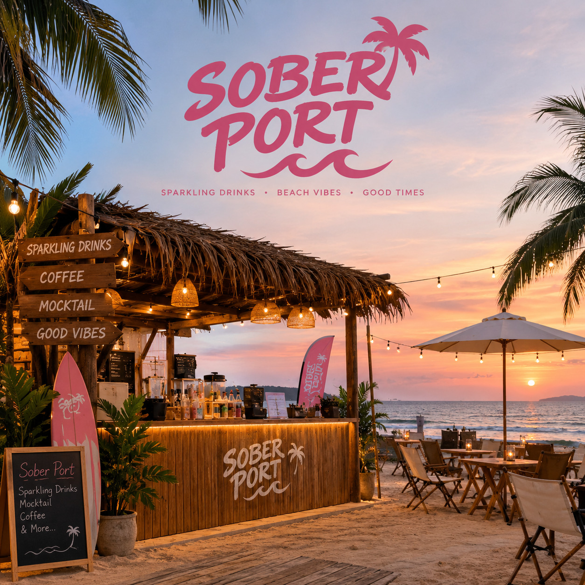

SOBER PORT - Vibe Beach Cafe
Welcome to SOBER PORT, your perfect seaside escape.
Enjoy our Good Vibes, Great Coffee slogan
while relaxing with delicious food and refreshing drinks.
Our cafe offers a chill beach atmosphere for friends,
families, and anyone who loves the ocean.
Welcome to Our Beach Cafe

Our Menu / Services
- 1. Iced Latte
- Fresh espresso mixed with cold milk. Price: RM 8.00
- 2. SParkling
- A refreshing sparkling drink perfect for a sunny beach day. Price: RM 7.00
- 3. Beach Burger
- A juicy chicken burger served with crispy fries. Price: RM 12.00
- 4. Chocolate Brownie
- A rich chocolate brownie for dessert lovers. Price: RM 6.00
- 5. Beachside Seating
- Relax and enjoy the seaside atmosphere with friends. Price: Free
How to Order
- Visit SOBER PORT and check out our menu.
- Choose your favourite food and drinks.
- Place your order at the counter.
- Make your payment and collect your order.
- Relax and enjoy your beach cafe experience!
Facilities
- Comfortable indoor and outdoor seating
- Free Wi-Fi for customers
- Beach view and relaxing atmosphere
- Parking space for customers
- Friendly customer service
What Our Customers Say
"SOBER PORT is the perfect place to chill with friends.
The coffee is delicious, the atmosphere is relaxing,
and the beach view makes the experience even better!"
A Happy Customer
Contact Us
Address:
SOBER PORT - Vibe Beach Cafe
Jalan Pantai Batu Buruk ii
30600 Kuala Terengganu, Terengganu
Malaysia
Email:
soberport@example.com
Find Us:
View Location on Google Maps